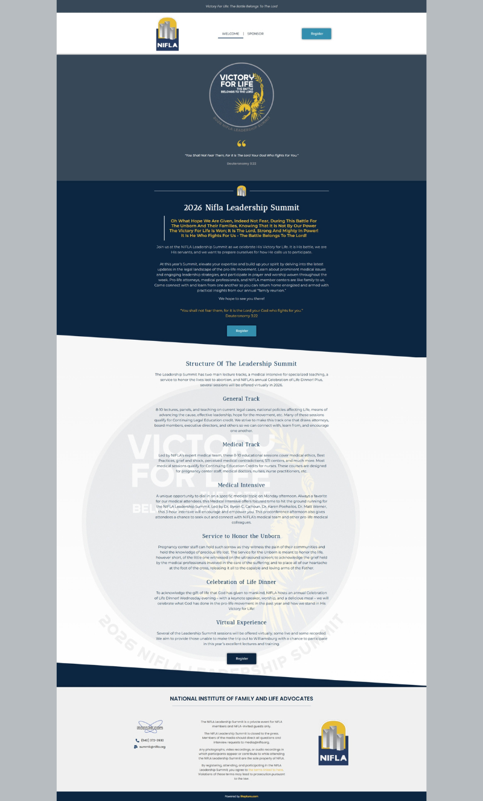

My Featured Projects

Grace & Goods
Modern e-commerce website with smooth UX.

Dr. Brian Mitchell & Associates
Professional and approachable design.

Westerner Products
Clean business design highlighting services.

Patriots Insurance
Clear layout for client coverage options.

NIFLA Leadership Summit
Nonprofit advocacy website built for clarity.

Water Walkers Worldwide
Community and faith-based design.

AZ Gastroenterology
Clean professional medical layout.

Flutter Inc.
Modern creative site emphasizing design.